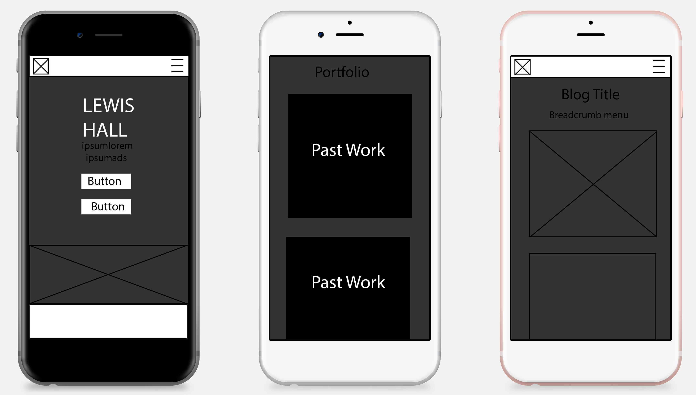

Over the last few weeks I have been in the process of increasing my web presence by creating my own portfolio that best showcases my talents and the previous work I have developed over my time at university. In this blog post I will show you my process of building my portfolio from scratch, no frameworks!
The beginning
As every project should start I had to begin with some basic research to answer question such as; what usually goes into a portfolio; what sort of navigation to most portfolio’s use; what do all portfolios have in common. From this brief research I found that I need to include my past work, a clear contact form and social media links.
Next I decided to create some simple wireframes to showcase what my portfolio will look like at the structural level. The point of this exercise was to figure out the layout and content placement of the elements on the page. The advantage of using wireframes at this stage is that they are super quick to make meaning that if you come up with any changes you don’t feel like you’ve wasted all that time making something you don’t even use.
The first wireframe I decided to draw was what the layout would be like on mobile as this "helps prioritize site elements while putting you in a good mindset for thinking about what content is most relevant to the site" (Seguetech, 2016:Online) and it is easy to scale this up to desktop view. Doing this makes sure that all the important content you want the visitor to see is above the fold line (the portion of the webpage that is visible without scrolling)
I created my wireframes in adobe illustrator as seen in the image below.
Coding
Then came the hard part, the coding. I recommend EVERYONE to start coding by using the mobile first approach. It’s as simple as it sounds, designing for the smallest screen and working your way up. If you don’t acknowledge the importance of responsive web design just think of it this way, 52.4% of people that access the internet are from mobile devices. Just let that sink in for a second. (Statista, 2018:Online)
I made sure that I conformed will all the latest W3C web standards to make sure that my website can be accessible to everyone.
Techniques
Throughout my portfolio I used a variety of techniques such as flexbox and CSS grid to create my layouts. I decided to use CSS grid for all the elements that I wanted to be side by side, for example in the portfolio gallery. CSS grid allows you to split the page into a series of columns and rows giving you the freedom to put anything anywhere on the page which was very difficult with just flex box.
SVG
To make my portfolio stand out from the rest I decided to add an animated SVG (Scaleable Vector Graphic) on my homepage. I recommend if you are thinking of making a portfolio, try to think outside the box and to not just copy what everyone else does. Make your site stand out from the rest! You want to get a job, right?
The reason I used an SVG is because you guessed it, its scalable. That means that whether its big or small there is no less in quality or fidelity and the file sizes are super small! This is great for responsive web design.
This was an element I am most proud of as this was the first time I have tried experimenting with SVG. And yes, it did take me ages to finish…
I decided to create a skyline of Blackpool, with the focusing being on the Blackpool tower. Not only is this unique to other portfolio’s it gives the visitor a little insight about myself without having to read anything. And if that’s not impressive enough, I made sure to add some subtle animations to the SVG for even more creativity. Notice how the Tower lights up every now and then?